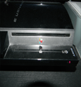
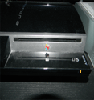
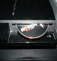
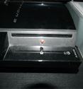

Pre-YLOD (Cooling System Repair)

The console will shut off and the standby light will flash after shutting down or the console's fan will spin fast and loud and the system will warn of overheating before the console shuts off. We will take a look at the hardware and determine what needs to be fixed. Repair comes with a 45 day warrenty it’s not a hardware replacement. If it’s a hardware replacement, 90 day warranty.
YLOD (Mainboard Repair)

When turning on the PlayStation 3, the light goes from green to yellow and then back to red followed by 3 beeps. We will take a look at the hardware and determine what needs to be fixed. Repair comes with a 45 day warrenty it’s not a hardware replacement. If it’s a hardware replacement, 90 day warranty.
Jammed disk drive or faulty drive

Caused by something being jammed in the disk drive or a faulty blue-ray disc drive. We will take a look at the hardware and determine what needs to be fixed. Repair comes with a 45 day warrenty it’s not a hardware replacement. If it’s a hardware replacement, 90 day warranty.
No power

Can be caused by a faulty power cord or by a hardware failure. We will take a look at the hardware and determine what needs to be fixed. Repair comes with a 45 day warrenty it’s not a hardware replacement. If it’s a hardware replacement, 90 day warranty.
Dashboard error
The console will turn on but the dashboard menu never fully loads. We will take a look at the hardware and determine what needs to be fixed. Repair comes with a 45 day warrenty it’s not a hardware replacement. If it’s a hardware replacement, 90 day warranty.
For more help, go to Playstation.com